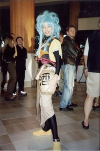

Summer 2002 Vacation |
| This is a short summary of my vacation. This is the reason that there were no updates. This is a preliminary page. More info will be added as time progresses. |
On June 14, 2002, I finally graduated from the University of California, Davis with a Bachelor of Science in Civil Engineering. Many friends and family turned up for the occasion, and I appreciate their support. I am proud of this accomplishment. I look forward to the long deserved vacation. This will be my first time overseas since I was a child.
China
I have spent a little more than a week in China with nine other friends. Spring Tour took us to several beautiful places. Some of these places were the Forbidden City, Shanghai, the Great Wall of China, a hot spring, and many other places. I have to thank my friend Lenny for aranging the trip.
Itinerary |
|
| 01 | Depart USA. Leaving LAX at 1:30p on China Eastern Airlines. |
| 02 | Arrive in Beijing. A pickup at the airport as we go to our hotel, the Kingwing Host Spring Hotel. Before hand, have a nice dinner. |
| 03 | Beijing. In the morning visit the Temple of Heaven then an Enamal Factory. After an included lunch, visit Tainanmen Square and the Forbidden City. After the included dinner, go to a Chinese Acrobatic Show. |
| 04 | Beijing. Visit the Great Wall of China in the morning. After Lunch, visit the beautiful Summer Palace. Shop at Wangfujin Street after dinner. |
| 05 | Beijing to Shanghai to Suzhou. Fly from Beijing to Shanghai. Lunch in Shanghai before take the bus from Shanghai to Suhzou. Dinner is at the hotel we will be staying at. The Garden Hotel. |
| 06 | Suzhou to Hangzhou. Visit Tiger Hill, Chilly Hill Temple, on the way to Hangzhou. We visit Zhouzhang on the way. Our Hotel for the evening is a 4 star Holliday Inn. |
| 07 | Hangzhou to Shanghai. Visit West Lake and Hupao Spring. Check into our hotel at the Shanghai Hotel. |
| 08 | Shanghai for a Day. Visit the "Bund" area, Yu Garden, Pu-dong area, People's Square. Night cruise on the Huangpu River. |
| 09 | Shanghai to USA. Visit Nanjin Road, and return to hotel in the afternoon. Depart for LAX at 3:00p, and arrive at LAX at 11:30a. You got to love the international date line. That evening pickup registration for Anime Expo 2002. |
Anime Expo 2002
Like previous years, I have attended Anime Expo at Long Beach, CA. I wear a Ryo-ohki hat so people can easily find me. I stayed in the area a few days after to visit the sights and hang around with friends. There is a mini report available here: http://tmffa.cyril.com/ax/2002/ax2002.html A basic Itinerary is below.
Itinerary |
|
| 01 | Shanghai to USA. Arrive at LAX at 11:30a. That evening pickup registration for Anime Expo 2002 and grab dinner in town. |
| 02 | AX Day 1. Check into the Hyatt. Go to Opening Ceremonies. Guest of Honor Panels and the Dealers Room. |
| 03 | AX Day 2. Wake up early to get tickets for Music Video Competition. See the Para Para Concert. Go to Music Video Competition. |
| 04 | AX Day 3. Wake up early to get tickets for Mascarade. Go to Mascardade. |
| 05 | AX Day 4. See the Charity Auction and the Awards Ceremony. Go to Closing Ceremonies. |
| 06 | Dead Day. A day for rest form the con. Stay at my friend's place and enjoy Southern California. Visit Mandrake. |
| 07 | Drive back to Davis. Visit Mandrake again and Gamers. Drive back to Davis in the afternoon. |
Europe
About two weeks after the start of AX, I visited Europe. I went on Contiki's European Explorer package. It was be a very fun and exciting trip with two other friends as we see several of the major sights. We visited the following countries: Great Britain, France, Belgium, Italy, Spain, Greece, Austria, Germany, Liechtenstein, Switzerland, Holland, Monaco, and Vatican City. Below is a basic Itinerary what we did.
Itinerary |
|
| 01 | Depart USA. Leaving SMF on American Airlines for the long 16 hour day flight to England. |
| 02 | Arrive London. After checking into the Imperial Hotel the day is yours to experience London at your leisure. |
| 03 | London to Paris. A warm welcome from your Contiki crew on our way to the White Cliffs of Dover. Cross the Channel to France then past World War I battlefields to Paris. Tonight our evening tour of this beautiful city. |
| 04 | Paris Sightseeing. This morning, on the city tour, visit the Nôtre Dame Cathedral. See the Eiffel Tower, Arc de Triomphe and the Louvre. Shop on the Champs Elysées, or watch the world go by at a sidewalk café. Why not join us tonight for an evening meal and afterwards experience a famous Parisian cabaret? |
| 05 | Paris to Bordeaux. Through the Loire Valley, home of over 3,000 châteaux. See magnificent Chambord and the vineyards which produce many of France’s finest wines |
| 06 | Bordeaux to Barcelona. First to Carcassone, a medieval walled city before crossing into Spain and heading for fascinating Barcelona. Time to view Gaudi’s amazing Art Nouveau Cathedral and to see the 1992 Olympic Games complex. |
| 07 | Barcelona Sightseeing. This morning, our walking tour includes the Gothic Quarter and Las Ramblas. Try ‘tapas’, go shopping for Lladró porcelain and Majorica pearls, wander at leisure and why not take in a Flamenco show? |
| 08 | Barcelona to Nice - French Riviera. Back into France for the Riviera playground and two nights at our hotel near the centre of Nice. |
| 09 | Nice at Leisure. Rub shoulders with the jet-set on the promenade at Nice. A chance to relax, swim or shop for French fashion – the choice is yours! Tonight we visit Monaco to see the Royal Palace and a Monte Carlo Casino. |
| 10 | Nice to Florence. Today starts with a visit to a French perfumery before continuing across to Italy to see the Leaning Tower of Pisa. Then the vineyards and olive groves of Tuscany as we reach Florence. |
| 11 | Florence Sightseeing. Our local guide takes us on a walking tour of the Duomo, Giotto’s Belltower, Basilica of Santa Croce and Piazza della Signoria. Shop for leather, silver and gold in this most famous of Renaissance Cities. |
| 12 | Florence to Rome. Southwards through the centre of Italy and on to the fabled Seven Hills of the Eternal City, Rome. Tonight a walking tour of this ancient city includes the Piazza Navona, the Trevi Fountain, the Pantheon and Piazza Venezia. |
| 13 | Rome Sightseeing. Today why not discover the ancient ruins of Rome with a local guide and in your free time leisurely discover the secrets of the Vatican City and the Sistene Chapel. |
| 14 | Rome to Sorrento. First, an opportunity to visit the ancient city of Pompeii, then on to cliffside Sorrento with its marvellous views of the Bay of Naples |
| 15 | Sorrento - Isle of Capri. Our complimentary cruise takes you to the Isle of Capri for a full day to enjoy its many attractions from the Blue Grotto to the hilltop town of Anacapri. |
| 16 | Sorrento to Greece. We cross Italy to Bari for our overnight ferry to Greece. Adriatic Ferry |
| 17 | To Athens. From Patras we cross the famous Corinth Canal before arriving in historic Athens. |
| 18 | Athens to Mykonos. Board the ferry this morning for the journey to the Cycladic Island of Mykonos. The dazzling white houses, windmills and the harbour are an unforgettable sight as you arrive. |
| 19 to 21 | Mykonos at Leisure. Make the most of the island’s myriad pleasures. Greek tavernas with traditional dancing or watch the sun set over Little Venice to the strains of Vivaldi. By day there’s excellent beaches, shops and trips to neighbouring islands. And so you have the freedom to eat when and where you please, only breakfast is included each day. |
| 22 | Mykonos to Athens. We take the ferry journey back to Athens. Tonight an opportunity to explore Athens nightlife. |
| 23 to 24 | Athens to Italy - Mini Cruise. This morning a guided tour of the Acropolis and Parthenon. Enjoy a city tour before boarding our ferry for the 2 nights and a full day cruise across the Adriatic to Italy. |
| 25 | To Venice. Our spectacular morning arrival into the Port of Venice is one of Europe’s most impressive sights. After docking we head to St Mark’s Square, the Doges’ Palace and Bridge of Sighs. See glass and lace making demonstrations before checking into our Hotel on the “Mainland’. |
| 26 | Venice at Leisure. Our complimentary motorboat takes us back into Venice. Perhaps take a trip to one of the outer islands and later treat yourself to a Gondola Ride. |
| 27 | Venice to Vienna. Past picturesque villages for two nights at our special resort in Vienna. Take a dip in the pool, try the gym or just relax. Resort Hotel |
| 28 | Vienna Sightseeing. Visit St Stephen’s Cathedral, see the State Opera House and maybe the Spanish Riding School. Drive along the famous Ring Road, perhaps see the palaces of the Hapsburg’s and take time to wander at leisure. Resort Hotel |
| 29 | Vienna to Munich. A leisurely start as we head for Munich, capital of Bavaria. View some of the sights before we check-in to our hotel. Tonight, we experience a typical Bavarian beer hall. |
| 30 | Munich Sightseeing. See the sights on the city tour including the town hall with its famous Glockenspiel. Explore the shops on Marienplatz or perhaps visit the Deutches Technological Museum. |
| 31 | Munich to Lucerne. We pause at Vaduz, capital of Liechtenstein, on our way to Switzerland and lakeside Lucerne. A very special treat as we take the cable car or cog railway for breathtaking views from our resort on top of Mt Pilatus, the highest hotel in Europe. Resort Hotel |
| 32 | Lucerne Sightseeing. We take the cable car down for a day exploring Lucerne. Enjoy our orientation tour including the Chapel Bridge, and wander through the cobbled streets. Why not visit the Lion Monument and check-out the shopping! Resort Hotel |
| 33 | Lucerne to Rhine Valley. Northward to the old town of St Goar with superb views of the River Rhine. We take a scenic Rhine cruise past the famous Lorelei Rock. |
| 34 | Rhine Valley to Amsterdam. From the Rhine Valley, we travel past Cologne and cross the border into Holland. Past canals and windmills, we arrive in Amsterdam. |
| 35 | Amsterdam Sightseeing. Visit the cheese village of Edam, a cheese farm, and see clogs being made. Enjoy the orientation tour and shop for diamonds. Tonight why not get together for a farewell meal. |
| 36 | Amsterdam to London. Travelling south to France, we catch the ferry from Calais to Dover and reach London early evening. |
| 37 | London for a day. See the sights for the day. Visit Big Ben, The London Bridge, the London Eye, the Tower of London, and the Parlament Building. In the evening see a play. |
| 38 | Return to USA. An 18 hour flight back to SMF. |
After such a long trip, I spent a week at home with my parents, then a week back in my apartment to get things sorted and in order. Finally, after 2.5 weeks after my return to the US, I can now continue with the updates.
{kind=link}
{kind=link}
{kind=link}